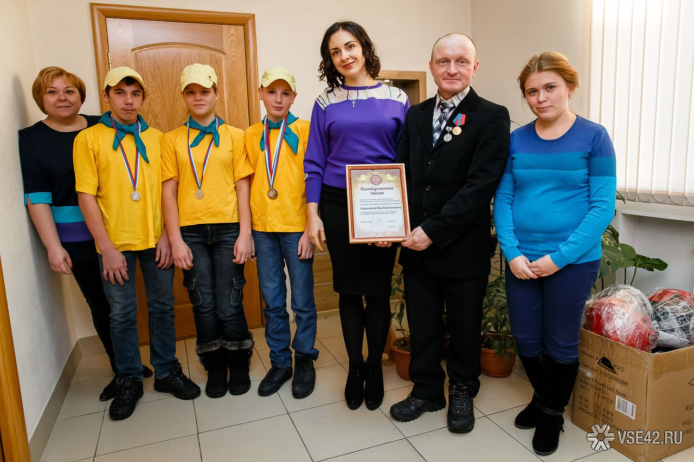

Так получилось, что я достаточно часто касаюсь темы благотворительности. Тема сложная, с кучей подводных камней, и часто не такая благодарная, как кажется со стороны.
Хочешь выделить из толпы людей мудака, который не знает своей дороги, а тратит жизнь на изобличение грехов окружающих? Такой будет использовать фразу «да они просто пиарятся», когда услышит о том, что какое-то предприятие построило очередную детскую площадку.
«Делай добро, и бросай его в воду» — говорила одна знакомая рыба, «Делай добро и рассказывай об этом на каждом углу» — спорю с рыбой я. И дело тут вовсе не в тщеславии, как может показаться тому, кто за всей этой вашей благотворительностью наблюдает со стороны.
Перечислить 100 рублей в благотворительный фонд может каждый. Но, в силу наших культурных особенностей, сказать об этом почему-то считается стыдным. Люди чаще поют в караоке, чем говорят, что перечислили в фонд 100 рублей.
Но фишка-то вот в чём. Каждые публичные 100 рублей (а лучше тысяча) становятся, как говорят в экономике, «точкой роста». Каждые публичные 100 рублей не просто рассказывают, что кто-то грустит. Это живой пример, что кто-то может помочь и уже делает это. Если этот кто-то может, то почему не могу я? Так раскручивается маховик.
Щекотливым для кого-то моментом считается малость сумм, которые они могут позволить себе потратить. Это тоже заблуждение. Любой предприниматель знает, что денежный поток из нескольких небольших ручьёв в долгосрочной перспективе всегда выигрывает у случайного сброса водозабора. К тому же, меньшая сумма чаще станет примером для ваших друзей, чем цифра с пятью нулями.
 Сотрудники БФ «Счастье детям» и директор МКС (К)
Разумеется, есть частные случаи, когда большие организации с громкими именами не хотят огласки, потому что боятся, что их завалят просьбами. Но всем остальным надо бы быть примером для всех остальных.
У «тихой благотворительности» лишь два объекта, на которые она оказывает влияние (отправитель и получатель). А у «публичной» — бесконечное множество. Таким образом, именно «тихая благотворительность» эгоистичней публичной.
В 9 случаях из 10 после того как я пишу о ком-то, кто отдаёт деньги на благотворительность, мне говорят, мол, «не стоило, давай уберём». Каждый раз я объясняю людям, что просто деньги — это половина дела. Нужно ещё и выдержать испытание мудаками.